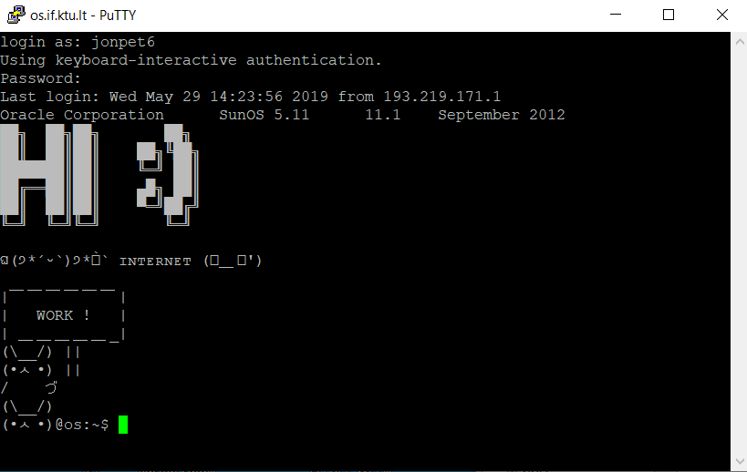
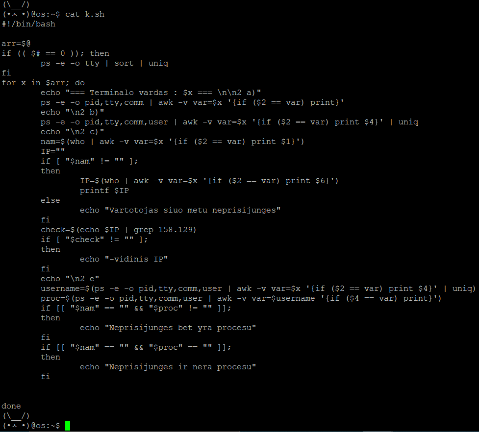
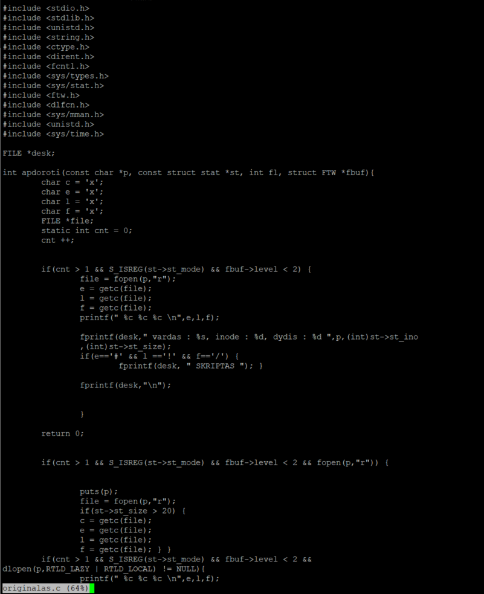
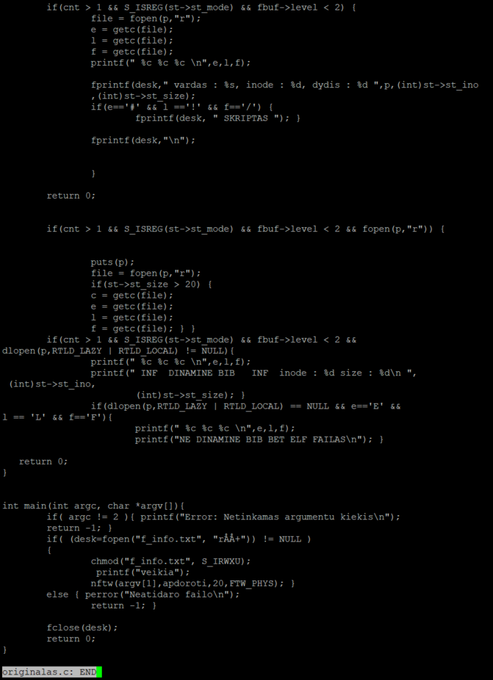

Basic Linux terminal and Bash work
Stack :
BASH
CSH
AWK
SunOS
Learned :
Scripting
Working with Linux servers
Working on a terminal is a lot of fun to me.
I enjoy customizing and making little tweaks to my scripts to make them
compact and efficient.

This is an example of a program i wrote in bash that demonstrates my ability to work with more advanced stuff like grep and AWK.
The program takes the passed arguments and then for each one them gets information about their availability, their IP address origin and
their processes in execution.

This next program is written in C. It gets a file and puts out information declaring who it belogs to, it's inode number and additionally
whether or not it is a Script, is it an ELF file or a Dynamic library.

It also incorporates BASH commands like nftw and chmod which are part of the POSIX standard.
